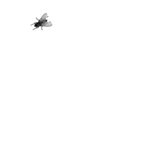

Antes de todo esto yo era una chica normal, cuando de repente tuve un accidente que me dejó paraplégica y con la única compañia de mi silla de ruedas
Mis amigos y familia me abandonaron, poco después fui ingresada en un hospital psiquiátrico donde pasaría el resto de mi vida, con el único entretenimiento de una vieja televisión

Los días cada vez eran más largos, en mi fría habitación con la compañía de un extraño sonido que manaba de un pequeño mueble
Esta es la historia de como me convertí en lo que soy. ¿ Cuál es la tuya ?